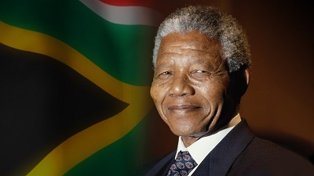

Nelson Mandela

"Education is the most powerful weapon which you can use to change the world.”
― Nelson Mandela"
Timeline Of Nelson Mandela
| 1918 |
Nelson Mandela was Born at Mvezo in the Transkei on 18th july 1981. |
|
1925-1942 |
- Attends primary school near Qunu.
- Undergoes initiation; Attends Clarkebury Boarding Institute in Engcobo.
- Attends Healdtown, the Wesleyan College at Fort Beaufort.
- Enrols at the University College of Fort Hare, in Alice.
- Completes BA through the University of South Africa (UNISA).
|
| 1944 |
- Co-founds the ANC Youth League (ANCYL).
- Marries Evelyn Ntoko Mase – they have four children: Thembekile (1945); Makaziwe (1947 – who dies after nine months); Makgatho (1950); Makaziwe (1954)
|
| 1948 |
Elected national secretary of the ANCYL |
| 1952 |
Defiance Campaign begins; Arrested and charged for violating the Suppression of Communism Act; Elected Transvaal ANC President; Convicted with J.S Moroka, Walter Sisulu and 17 others under the Suppression of Communism Act; Sentenced to nine months imprisonment with hard labour, suspended for two years; Elected first of ANC deputy presidents; Opens law firm with Oliver Tambo - the only black law firm in Johannesburg in the 1950s |
| 1993 |
Awarded the Nobel Peace Prize with President FW de Klerk |
| 1994 |
Elected by Parliament as first president of a democratic South Africa |
| 2001 |
Diagnosed with prostate cancer |
| 2009 |
Votes for the fourth time in his life; Attends the inauguration of President Jacob Zuma on 9 May and witnesses Zuma's first State of the Nation address; Turns 91 |
2010 |
Formally presented with the Fifa World Cup trophy before it embarks on a tour of South Afric |
| 2011 |
His book Nelson Mandela By Himself: The Authorised Book of Quotations is launched |
| 2013 |
Passes away at home in Johannesburg |